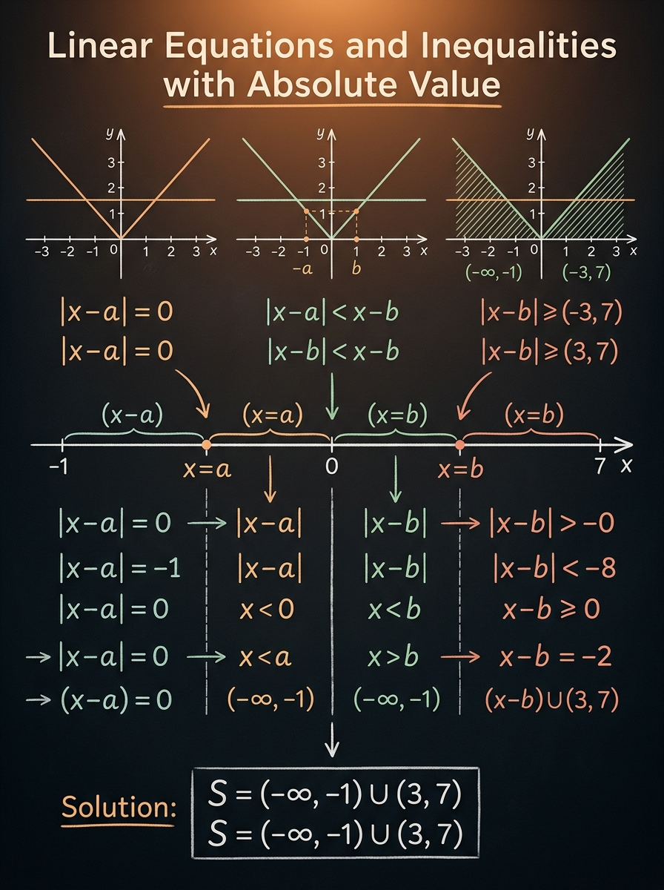

Kroz standardne šeme, uslov na desnu stranu i metod intervalne dekompozicije.
Matoteka znanje · Lekcija 18
Linearne jednačine i nejednačine sa apsolutnom vrednošću
Apsolutna vrednost ne traži brzinu bez razmišljanja, već disciplinu. Na prijemnom te najčešće ne obori sam račun, nego pogrešan znak, zaboravljen uslov ili propušten presek sa intervalom. Zato ovu lekciju učimo kao spoj intuicije o rastojanju i precizne intervalne logike.
Bez preseka sa intervalom lako nastaju lažna rešenja i pogrešna unija.
Najčešće se proveravaju nule izraza u zagradama, znak i uredno sastavljanje konačnog skupa.

Zašto je ova lekcija važna
Apsolutna vrednost se pojavljuje baš tamo gde ispitivač želi da proveri da li razumeš znak, interval i geometrijsko značenje izraza. Zato ova tema stoji između lakih linearnih zadataka i ozbiljnijih problemskih zadataka koji traže preciznost u više koraka.
Temelj preciznosti
Rastojanje, a ne dekoracija
Zapis \( |x-a| \) treba da čitaš kao rastojanje broja \(x\) do tačke \(a\). Kada tako razmišljaš, mnogi zadaci postaju prirodni: jednačina traži gde je rastojanje tačno određeno, a nejednačina traži gde je ono manje ili veće od neke granice.
Most ka težim zadacima
Izrazi sa više apsolutnih zagrada uvode istu logiku koja se kasnije koristi kod metoda intervala, analize znaka i funkcionalnog posmatranja zadatka. Nije poenta samo dobiti broj, već kontrolisati ceo skup rešenja.
Česta prijemna zamka
Na papiru zadatak često izgleda kratko, ali skriva obavezne uslove: nule izraza u zagradama, znak desne strane i presek sa svakim intervalom. Upravo tu se gube bodovi kad se radi napamet.
Intuicija i osnovna definicija
Pre nego što rešavaš zadatak, moraš da znaš šta apsolutna vrednost meri. To je broj bez znaka, odnosno udaljenost od nule ili, šire, udaljenost između dve tačke na brojnoj pravoj.
Prvo značenje, pa račun
Definicija po delovima
\[
|t| =
\begin{cases}
t, & t \ge 0, \\
-t, & t < 0.
\end{cases}
\]
Kada je izraz u zagradi nenegativan, apsolutna vrednost ga ne menja. Kada je negativan, menja mu znak. Ovo je tehnička osnova za kasnije skidanje zagrada po intervalima.
Mikro-provera: zašto je \( |{-7}| = 7 \)?
Zato što apsolutna vrednost meri udaljenost od nule. Broj \(-7\) je od nule udaljen tačno \(7\) jedinica.
Rastojanje do tačke \(a\)
\[
|x-a| = \text{rastojanje broja } x \text{ do tačke } a.
\]
Ako vidiš \( |x-3| = 2 \), čitaj to ovako: „Nađi sve brojeve koji su udaljeni \(2\) od tačke \(3\).“ Zato odmah dobijaš dva kandidata: \(x=1\) i \(x=5\).
Mikro-provera: koliko je \( |2-5| \) i šta to znači?
\( |2-5| = 3 \). To znači da su tačke \(2\) i \(5\) na brojnoj pravoj udaljene \(3\) jedinice.
Šta odmah znaš bez računanja
- \( |A(x)| \ge 0 \) za svako \(x\).
- \( |A(x)| = 0 \) tačno kada je \( A(x) = 0 \).
- \( |A(x)| \) nikada nije negativno.
- Kada ima više apsolutnih zagrada, nule izraza u njima dele brojnu pravu na intervale.
Mikro-provera: može li \( |2x-1| < 0 \)?
Ne može. Apsolutna vrednost nikad nije negativna, pa je svaka takva nejednačina automatski bez rešenja.
Standardni oblici koje moraš da prepoznaš odmah
Najveća ušteda vremena na ispitu dolazi iz toga da ne rešavaš svaki zadatak od nule. Prvo prepoznaj tip. Tek kada znaš tip, biraš pravi alat: dve jednačine, dvostruku nejednačinu, uniju intervala ili proveru uslova na desnu stranu.
Brza klasifikacija
Jednačina \( |A(x)| = c \)
\[
|A(x)| = c
\iff
\begin{cases}
A(x) = c, \\
A(x) = -c
\end{cases}
\quad \text{ako je } c \ge 0.
\]
Ako je \(c < 0\), rešenja nema. Ako je \(c = 0\), ostaje samo \(A(x)=0\). Ovo je najosnovniji model sa jednom apsolutnom vrednošću.
Mini-primer: \( |2x-3| = 5 \Rightarrow 2x-3=5 \) ili \( 2x-3=-5 \).
Nejednačina \( |A(x)| < c \) ili \( |A(x)| \le c \)
\[
|A(x)| \le c \iff -c \le A(x) \le c \quad \text{za } c \ge 0.
\]
Ovde dobijaš presek, ne uniju. Ideja je da je izraz u zagradi „zarobljen“ između \(-c\) i \(c\). Ako je \(c < 0\), rešenja nema.
Mini-primer: \( |3x+1| < 7 \Rightarrow -7 < 3x+1 < 7 \).
Nejednačina \( |A(x)| > c \) ili \( |A(x)| \ge c \)
\[
|A(x)| \ge c \iff A(x) \le -c \;\; \text{ili} \;\; A(x) \ge c \quad \text{za } c \ge 0.
\]
Ovde dobijaš uniju dva dela. Razlog je jednostavan: izraz mora biti dovoljno levo ili dovoljno desno od nule, van centralne zone.
Mini-primer: \( |x-1| \ge 4 \Rightarrow x-1 \le -4 \) ili \( x-1 \ge 4 \).
Kada je desna strana promenljiva
\[
|A(x)| = B(x) \quad \text{ili} \quad |A(x)| \le B(x)
\]
Pre bilo kakvog rastavljanja moraš proveriti da li je \(B(x)\) uopšte nenegativno. Apsolutna vrednost može biti jednaka ili manja od \(B(x)\) samo tamo gde je \(B(x) \ge 0\).
Pravilo: prvo uslov na desnu stranu, pa tek onda rešavanje.
Mikro-provera: zašto u zadatku \( |2x-1| = x+5 \) prvo gledamo \( x+5 \ge 0 \)?
Zato što leva strana nikada nije negativna. Ako je \(x+5 < 0\), jednakost ne može da važi, bez obzira na levu stranu.
Metod intervalne dekompozicije
Kada imaš više apsolutnih zagrada, ne postoji univerzalna magična formula. Tada brojnu pravu deliš nulama izraza iz svake zagrade, na svakom intervalu određuješ znak i tek onda skidaš apsolutne vrednosti. To je centralna tehnika ove lekcije.
Glavni algoritam
Korak 1
Nađi nule izraza u zagradama
Ako imaš \( |x-2| + |x+1| \), prelomne tačke su \(x=2\) i \(x=-1\). One određuju gde se menja znak izraza u apsolutnoj vrednosti.
Korak 2
Poređaj tačke na brojnoj pravoj
Uvek ih napiši sleva nadesno. Tek tada tačno vidiš intervale: \((-\infty,-1)\), \([-1,2)\) i \([2,+\infty)\).
Korak 3
Na svakom intervalu odredi znak
Na primer, za \(x < -1\) i \(x-2\) i \(x+1\) su negativni, pa \( |x-2| = -(x-2) \) i \( |x+1| = -(x+1) \).
Korak 4
Skini zagrade i reši linearni uslov
Kada znakovi postanu poznati, zadatak više nije „apsolutna vrednost“, nego obična linearna jednačina ili nejednačina na datom intervalu.
Korak 5
Napravi presek sa tim intervalom
Ovo je korak koji se najčešće zaboravlja. Rešenje koje dobiješ iz linearnog uslova mora da pripada baš tom intervalu u kome si radio.
Korak 6
Na kraju sastavi uniju
Sva validna parcijalna rešenja spajaš u konačan skup. Ako neki interval ne daje ništa, jednostavno ga preskačeš.
Mini demonstracija
Kako se rastavlja \( |x-2| + |x+1| \)
\[
|x-2| + |x+1| =
\begin{cases}
1 - 2x, & x < -1, \\
3, & -1 \le x \le 2, \\
2x - 1, & x > 2.
\end{cases}
\]
Ovde se lepo vidi važan uvid: između prelomnih tačaka zbir rastojanja do tačaka \(-1\) i \(2\) postaje konstanta. To nije slučajnost, već geometrijsko značenje zbira dve udaljenosti.
Mikro-provera: zašto je na srednjem intervalu rezultat baš \(3\)?
Za svaki \(x\) između \(-1\) i \(2\) rastojanje do \(-1\) plus rastojanje do \(2\) jednako je rastojanju između tih dveju tačaka, a to je \(3\).
Mentalni redosled
Kako da se ne izgubiš u zadatku
- Ne skidaj zagrade pre nego što odrediš interval.
- Ne preskači proveru da li je dobijeno rešenje u tom intervalu.
- Ako desna strana nije konstanta, prvo proveri njen znak.
- Na kraju obavezno napiši skup rešenja kao uniju intervala ili tačaka.
Interaktivna laboratorija: pogledaj kako nastaje rešenje
Ovde menjaš tačke \(a\) i \(b\), vrednost \(c\) i relaciju. Graf narandžaste funkcije \( f(x) = |x-a| + |x-b| \) pokazuje kako se zadatak zapravo ponaša, a brojna prava ispod odmah prikazuje skup rešenja za izabranu relaciju.
Canvas laboratorija
Podesi parametre
Levi interval
\(x < p\)
Srednji interval
\(p \le x \le q\)
Desni interval
\(x > q\)
Rezultat
\(x \in \varnothing\)
Pomeri klizače i prati kako se menja položaj horizontale u odnosu na grafik.
Prelomne tačke: \(p = -2\), \(q = 3\).
Minimalna vrednost funkcije je \(q-p = 5\), i postiže se na celom segmentu \([p,q]\).
Kad je horizontala ispod minimalne vrednosti, za relaciju \(=\) i \( \le \) nema preseka.
Vođeni primeri korak po korak
Primeri su poređani od osnovnog obrasca do ozbiljnije intervalne dekompozicije. Ideja je da vidiš kako isti princip raste zajedno sa složenošću zadatka.
Od lakšeg ka težem
Primer 1
Reši jednačinu \( |2x-3| = 5 \)
Desna strana je pozitivna konstanta, pa odmah razdvajaš dve linearne jednačine.
1
Postavi dve mogućnosti.
\(2x-3=5\) ili \(2x-3=-5\).
2
Reši obe jednačine.
Iz prve dobijaš \(2x=8\), pa je \(x=4\). Iz druge dobijaš \(2x=-2\), pa je \(x=-1\).
3
Napiši skup rešenja.
\[ S = \{-1, 4\}. \]
\[
|2x-3| = 5 \iff x=-1 \;\; \text{ili} \;\; x=4.
\]
Primer 2
Reši nejednačinu \( |3x+1| < 7 \)
Ovde koristiš dvostruku nejednačinu, jer tražiš da izraz ostane unutar centralne zone.
1
Pretvori zadatak u dvostruku nejednačinu.
\[ -7 < 3x+1 < 7. \]
2
Oduzmi \(1\) svuda.
\[ -8 < 3x < 6. \]
3
Podeli sa \(3\).
\[ -\frac{8}{3} < x < 2. \]
\[
S = \left(-\frac{8}{3}, 2\right).
\]
Primer 3
Reši jednačinu \( |2x-1| = x+5 \)
Ovo je tip zadatka u kome mnogi preskoče najvažniji uslov: desna strana mora biti nenegativna.
1
Postavi uslov na desnu stranu.
\[ x+5 \ge 0 \iff x \ge -5. \]
2
Razdvoji slučajeve.
\[ 2x-1 = x+5 \quad \text{ili} \quad 2x-1 = -(x+5). \]
3
Reši obe jednačine.
Iz prve: \(x=6\). Iz druge: \(3x=-4\), pa je \(x=-\frac{4}{3}\).
4
Proveri uslov \(x \ge -5\).
Obe vrednosti ga zadovoljavaju, pa obe ostaju u rešenju.
\[
S = \left\{-\frac{4}{3}, 6\right\}.
\]
Primer 4
Reši nejednačinu \( |x-2| + |x+1| \le 5 \)
Ovo je pun intervalni metod: dve zagrade, tri intervala, tri linearna zadatka i na kraju unija.
1
Prelomne tačke su \(-1\) i \(2\).
Brojna prava se deli na \(x < -1\), \(-1 \le x < 2\) i \(x \ge 2\).
2
Na levom intervalu.
\[ |x-2| + |x+1| = (2-x) + (-x-1) = 1-2x. \] Rešavamo \(1-2x \le 5\), pa je \(x \ge -2\). Sa uslovom \(x < -1\) dobijaš \([ -2, -1 )\).
3
Na srednjem intervalu.
\[ |x-2| + |x+1| = (2-x) + (x+1) = 3. \] Pošto je \(3 \le 5\), ceo interval \([-1,2)\) ulazi u rešenje.
4
Na desnom intervalu.
\[ |x-2| + |x+1| = (x-2) + (x+1) = 2x-1. \] Rešavamo \(2x-1 \le 5\), pa je \(x \le 3\). Sa uslovom \(x \ge 2\) dobijaš \([2,3]\).
5
Sastavi uniju.
\[ [-2,-1) \cup [-1,2) \cup [2,3] = [-2,3]. \]
\[
S = [-2, 3].
\]
Ključne formule i mentalne prečice
Ove formule nisu zamena za razmišljanje, ali jesu odličan alat za brzu klasifikaciju zadatka. Ako ih znaš napamet i razumeš kada važe, već si uklonio pola prijemne panike.
Formula vault
Rastojanje do tačke
\[
|x-a| = d
\]
Tražiš sve brojeve čije je rastojanje do tačke \(a\) jednako \(d\). Ako je \(d>0\), obično dobijaš dve tačke.
Centralna zona
\[
|A(x)| \le c \iff -c \le A(x) \le c \quad (c \ge 0)
\]
Tipično daje jedan interval ili prazan skup.
Spoljašnja zona
\[
|A(x)| \ge c \iff A(x) \le -c \;\; \text{ili} \;\; A(x) \ge c \quad (c \ge 0)
\]
Tipično daje uniju dva intervala ili ceo skup realnih brojeva.
Desna strana mora imati smisla
\[
|A(x)| = B(x) \Rightarrow B(x) \ge 0
\]
Isti princip važi i za \( |A(x)| \le B(x) \). Bez ovog uslova zadatak se rešava pogrešno od starta.
Česte greške koje skidaju bodove
Ove greške nisu „sitnice“. U većini prijemnih zadataka baš one odlučuju da li dobijaš pun broj poena ili ostaješ bez rešenja koje si skoro imao.
Pazi na ovo
Mešanje preseka i unije
Kod \( |A(x)| \le c \) dobijaš dvostruku nejednačinu, dakle presek uslova. Kod \( |A(x)| \ge c \) dobijaš uniju. Zamena ova dva obrasca je najčešća formalna greška.
Zaboravljen uslov na desnu stranu
U zadacima poput \( |2x-1| = x+5 \) mnogi odmah pišu dve jednačine. To je pogrešno dok ne proveriš da li je \(x+5 \ge 0\).
Bez preseka sa intervalom
Na intervalu \(x < -1\) dobiješ, recimo, \(x \ge -2\). Pravo parcijalno rešenje nije „\(x \ge -2\)”, nego \([-2,-1)\), jer moraš poštovati interval u kome si skinuo zagrade.
Pogrešno poređane prelomne tačke
Ako tačke ne napišeš sleva nadesno, lako zameniš znak izraza u zagradama i ceo zadatak se raspadne. Zato je crtanje male brojevne prave dobra navika, a ne gubitak vremena.
Neproveren krajnji rezultat
Posle dužeg računanja obavezno pročitaj konačan skup: da li deluje logično? Da li je prazan, interval, unija ili skup tačaka? Kratka provera često spašava zadatak.
Mehaničko skidanje apsolutne vrednosti
Izraz \( |x-2| \) nije isto što i \(x-2\) za svako \(x\). Zagrada se skida tek kada znaš na kom intervalu radiš.
Veza sa prijemnim zadacima
Na prijemnom se tema obično ne zove „apsolutna vrednost“, nego dolazi prerušena u zadatak koji izgleda kratko. Tvoj posao je da odmah prepoznaš strukturu i da ne pogrešiš u organizaciji slučajeva.
Ispitna strategija
Kako se najčešće pojavljuje
Kao jednačina sa jednom zagradom, nejednačina sa dve zagrade, zadatak sa promenljivom na desnoj strani, ili kao skraćeni „odredi skup rešenja“ gde nema mesta za nered u zapisu.
Šta proveri u prvih 20 sekundi
- Koliko ima apsolutnih zagrada?
- Koje su nule izraza u njima?
- Da li je desna strana sigurno nenegativna?
- Da li zadatak vodi ka preseku ili uniji?
Brz savet za tempo rada
Kada vidiš više apsolutnih zagrada, nacrtaj malu brojnu pravu na marginu. To traje nekoliko sekundi, a mnogo je jeftinije nego da posle ispravljaš znakove i pogrešne intervale.
Vežbe za samostalan rad
Probaj prvo samostalno, a tek onda otvori rešenje. Na prijemnom ti neće nedostajati formula, nego miran redosled koraka.
Proveri razumevanje
Zadatak 1
Reši jednačinu \( |x-4| = 3 \).
Rešenje
\(x-4=3\) ili \(x-4=-3\), pa je \(x=7\) ili \(x=1\). Zato je \(S=\{1,7\}\).
Zadatak 2
Reši nejednačinu \( |2x+1| \le 5 \).
Rešenje
\(-5 \le 2x+1 \le 5\), pa \(-6 \le 2x \le 4\), odnosno \(-3 \le x \le 2\). Rešenje je \(S=[-3,2]\).
Zadatak 3
Reši nejednačinu \( |x-1| \ge 4 \).
Rešenje
\(x-1 \le -4\) ili \(x-1 \ge 4\), pa je \(x \le -3\) ili \(x \ge 5\). Dakle \(S=(-\infty,-3] \cup [5,+\infty)\).
Zadatak 4
Reši jednačinu \( |3x-2| = 2x+4 \).
Rešenje
Prvo \(2x+4 \ge 0\), pa \(x \ge -2\). Zatim \(3x-2=2x+4\) daje \(x=6\), a \(3x-2=-(2x+4)\) daje \(5x=-2\), odnosno \(x=-\frac{2}{5}\). Obe vrednosti zadovoljavaju uslov, pa je \(S=\left\{-\frac{2}{5},6\right\}\).
Zadatak 5
Reši nejednačinu \( |x+2| + |x-1| < 6 \).
Rešenje
Prelomne tačke su \(-2\) i \(1\). Dobijaš: za \(x<-2\), izraz je \(-2x-1\), pa \(x>-\frac{7}{2}\), što daje \(\left(-\frac{7}{2},-2\right)\). Za \(-2 \le x <1\), zbir je \(3\), pa ceo interval ulazi. Za \(x \ge 1\), izraz je \(2x+1\), pa \(x<\frac{5}{2}\), što daje \([1,\frac{5}{2})\). Konačno \(S=\left(-\frac{7}{2},\frac{5}{2}\right)\).
Zadatak 6
Za koje vrednosti parametra \(p\) jednačina \( |x-2| = p \) ima tačno jedno rešenje?
Rešenje
Za \(p<0\) nema rešenja, za \(p>0\) postoje dva rešenja, a tačno jedno rešenje dobijaš samo kada je \(p=0\). Tada je jedino rešenje \(x=2\).
Glavna poruka lekcije
Apsolutna vrednost se ne rešava „napamet“. Ili je čitaš kao rastojanje, ili je uklanjaš kroz pravilno postavljene intervale. U oba slučaja, ključ je isti: precizno odvoj slučajeve i poštuj uslove.
\[
\text{nule izraza u zagradama} \;\Longrightarrow\; \text{intervali} \;\Longrightarrow\; \text{linearni slučajevi} \;\Longrightarrow\; \text{presek i unija}.
\]
Rezime
Na kraju ove lekcije treba da znaš ne samo kako se dobija odgovor, već i zašto je postupak baš takav. To je jedini siguran način da zadatak uradiš i kada oblik nije potpuno isti kao u zbirci.
Šta mora da ostane
Apsolutna vrednost je rastojanje
Izraz \( |x-a| \) znači udaljenost broja \(x\) od tačke \(a\). Odatle dolaze svi osnovni obrasci i geometrijska intuicija.
Jedna zagrada ima svoje standardne šeme
Za \( |A(x)|=c \) dobijaš dve jednačine, za \( |A(x)| \le c \) dvostruku nejednačinu, a za \( |A(x)| \ge c \) uniju.
Više zagrada traži intervale
Nule izraza u zagradama dele brojnu pravu. Na svakom intervalu skidaš zagrade pravilnim znakom i praviš presek sa tim intervalom.
Desna strana mora biti dozvoljena
U zadacima oblika \( |A(x)| = B(x) \) ili \( |A(x)| \le B(x) \) prvo gledaš gde je \(B(x)\) nenegativno.
Najčešća greška je formalna, ne računska
Preskočen interval, pogrešna unija ili zaboravljen uslov mnogo češće ruše zadatak nego samo računanje.
Sledeći logičan korak
Posle ove teme prirodno dolaze kvadratne jednačine i nejednačine, gde će analiza znaka i intervala postati još važnija.
Ako vidiš apsolutnu vrednost, prvo pitaj: „Da li je ovo rastojanje ili intervalni slučaj?“
Ako ima više zagrada, obavezno nacrtaj malu brojnu pravu i označi prelomne tačke.
Ako je na desnoj strani izraz, proveri da li uopšte može biti nenegativan.